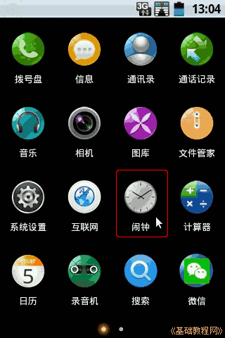
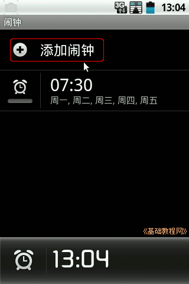
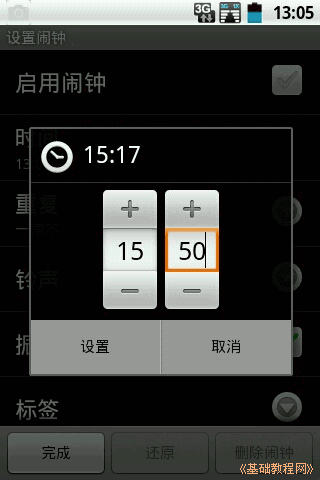
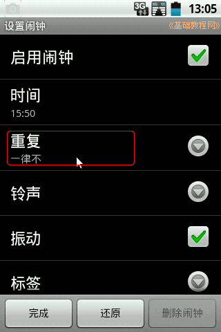
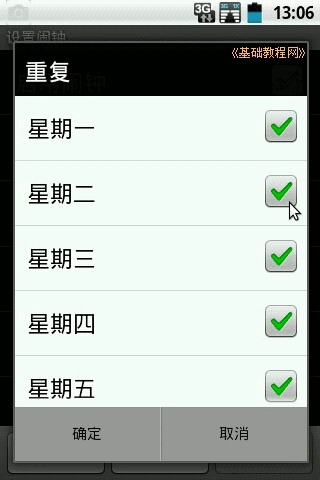
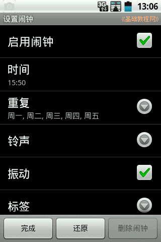
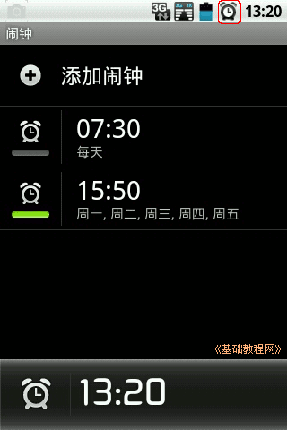
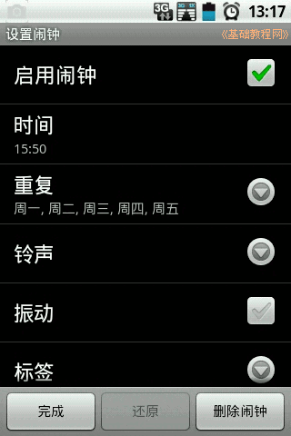
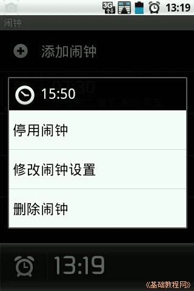

Android 安卓智能手机操作教程
作者：TeliuTe 来源：基础教程网
八、设置闹铃、闹钟 返回目录 下一课本节课教你学会设置手机闹铃；
1、设置闹铃
1）在主屏幕的时间上点按一下，或者点按菜单“所有程序－系统设置－闹钟”进入；

2）点按“添加闹钟”，新增一个闹铃；

3）在出来的时间设置中，按加、减号或直接输入时间，然后点按“设置”；

4）在铃声设置里，可以选择是否启用，是否每天重复，选择铃声，是否振动，；

5）点按“重复”，将需要闹铃的天数都勾选上，全部勾上就是“每天”，再点“确定”；

6）返回检查是否开启振动，是否更换铃声，然后点“完成”按钮；

7）这时就添加好了一个闹钟，，屏幕顶部的通知栏上也显示闹钟图标；

8）在设好的闹钟上点按一下，可以重新进入设置界面；

9）闹铃下边有绿线表示启用，灰色表示禁用的闹铃，点击可以快速切换，长按闹铃可以显示快捷菜单；

本节学习了设置闹铃、闹钟的基础知识，如果你成功地完成了练习，请继续学习下一课内容；
本教程由86团学校TeliuTe制作|著作权所有
基础教程网：http://teliute.org/
美丽的校园……
转载和引用本站内容，请保留作者和本站链接。